The bSims R package is a highly scientific and utterly addictive bird point count simulator. Highly scientific, because it implements a spatially explicit mechanistic simulation that is based on statistical models widely used in bird point count analysis (i.e. removal models, distance sampling), and utterly addictive because the implementation is designed to allow rapid interactive exploration (via shiny apps) and efficient simulation (supporting various parallel backends), thus elevating the user experience.
The goals of the package are to:
The simulation interface was designed with the following principles in mind:
This documents outlines the major functionality of the package. First we describe the motivation for the simulation and the details of the layers. Then we outline an interactive workflow to design simulation studies and describe how to run efficient simulation experiments. Finally we present some of the current limitations of the framework and how to extend the existing functionality of the package to incorporate more of the biological realism into the simulations.
Introductory stats books begin with the coin flip to introduce the binomial distribution. In R we can easily simulate an outcome from such a random variable \(Y \sim Binomial(1, p)\) doing something like this:
But a coin flip in reality is a lot more complicated: we might consider the initial force, the height of the toss, the spin, and the weight of the coin.
Bird behavior combined with the observation process presents a more complicated system, that is often treated as a mixture of a count distribution and a detection/nondetection process, e.g.:
D <- 2 # individuals / unit area
A <- 1 # area
p <- 0.8 # probability of availability given presence
q <- 0.5 # probability of detection given availability
N <- rpois(1, lambda = A * D)
Y <- rbinom(1, size = N, prob = p * q)This looks not too complicated, corresponding to the true abundance being a random variables \(N \sim Poisson(DA)\), while the observed count being \(Y \sim Binomial(N, pq)\). This is the exact simulation that we need when we want to make sure that an estimator can estimate the model parameters (lambda and prob here). But such probabilistic simulations are not very useful when we are interested how well the model captures important aspects of reality.
Going back to the Poisson–Binomial example, N would be a result of all the factors influencing bird abundance, such as geographical location, season, habitat suitability, number of conspecifics, competitors, or predators. Y however would largely depend on how the birds behave depending on timing, or how an observer might detect or miss the different individuals, or count the same individual twice, etc.
Therefore the package has layers, that by default are conditionally independent of each other. This design decision is meant to facilitate the comparison of certain settings while keeping all the underlying realizations identical, thus helping to pinpoint effects without the extra variability introduced by all the other effects.
The conditionally independent layers of a bSims realization are the following, with the corresponding function:
bsims_init),bsims_populate),bsims_animate),bsims_detect), andbsims_transcribe).See this example as a sneak peek that we’ll explain in the following subsections:
library(bSims)
#> Loading required package: intrval
#> Loading required package: mefa4
#> Loading required package: Matrix
#> mefa4 0.3-7 2020-02-28
#>
#> Attaching package: 'mefa4'
#> The following object is masked from 'package:intrval':
#>
#> %notin%
#> Loading required package: MASS
#> Loading required package: deldir
#> deldir 0.1-28
#> bSims 0.2-2 2019-12-17 woonk-a-chunk
phi <- 0.5 # singing rate
tau <- 1:3 # detection distances by strata
tbr <- c(3, 5, 10) # time intervals
rbr <- c(0.5, 1, 1.5) # count radii
l <- bsims_init(10, # landscape
road=0.25, edge=0.5)
p <- bsims_populate(l, # population
density=c(1, 1, 0))
e <- bsims_animate(p, # events
vocal_rate=phi,
move_rate=1, movement=0.2)
d <- bsims_detect(e, # detections
tau=tau)
x <- bsims_transcribe(d, # transcription
tint=tbr, rint=rbr)
get_table(x) # removal table
#> 0-3min 3-5min 5-10min
#> 0-50m 0 0 0
#> 50-100m 0 0 0
#> 100-150m 0 0 0
op <- par(mfrow=c(2,3), cex.main=2)
plot(l, main="Initialize")
plot(p, main="Populate")
plot(e, main="Animate")
plot(d, main="Detect")
plot(x, main="Transcribe")
par(op)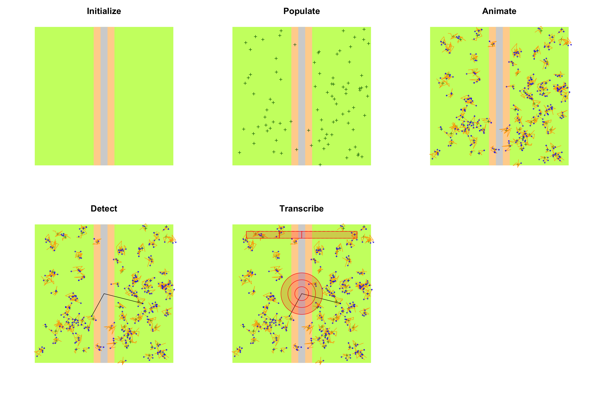
The bsims_ini function sets up the geometry of a local landscape. The extent of the landscape determines the edge lengths of a square shaped area. With no argument values passed, the function assumes a homogeneous habitat (H) in a 10 units x 10 units landscape, 1 unit is 100 meters. Having units this way allows easier conversion to ha as area unit that is often used in the North American bird literature. As a result, our landscape has an area of 1 km\(^2\).
The road argument defines the half-width of the road that is placed in a vertical position. The edge argument defines the width of the edge stratum on both sides of the road. Habitat (H), edge (E), and road (R) defines the 3 strata that we refer to by their initials (H for no stratification, HER for all 3 strata present).
The origin of the Cartesian coordinate system inside the landscape is centered at the middle of the square. The offset argument allows the road and edge strata to be shifted to the left (negative values) or to the right (positive values) of the horizontal axis. This makes it possible to create landscapes with only two strata. The bsims_init function returns a landscape object (with class ‘bsims_landscape’).
(l1 <- bsims_init(extent = 10, road = 0, edge = 0, offset = 0))
#> bSims landscape
#> 1 km x 1 km
#> stratification: H
(l2 <- bsims_init(extent = 10, road = 1, edge = 0, offset = 0))
#> bSims landscape
#> 1 km x 1 km
#> stratification: HR
(l3 <- bsims_init(extent = 10, road = 0.5, edge = 1, offset = 2))
#> bSims landscape
#> 1 km x 1 km
#> stratification: HER
(l4 <- bsims_init(extent = 10, road = 0, edge = 5, offset = 5))
#> bSims landscape
#> 1 km x 1 km
#> stratification: HE
op <- par(mfrow = c(2, 2))
plot(l1, main = "Habitat")
points(0, 0, pch=3)
plot(l2, main = "Habitat & road")
lines(c(0, 0), c(-5, 5), lty=2)
plot(l3, main = "Habitat, edge, road + offset")
arrows(0, 0, 2, 0, 0.1, 20)
lines(c(2, 2), c(-5, 5), lty=2)
points(0, 0, pch=3)
plot(l4, main = "2 habitats")
arrows(0, 0, 5, 0, 0.1, 20)
lines(c(5, 5), c(-5, 5), lty=2)
points(0, 0, pch=3)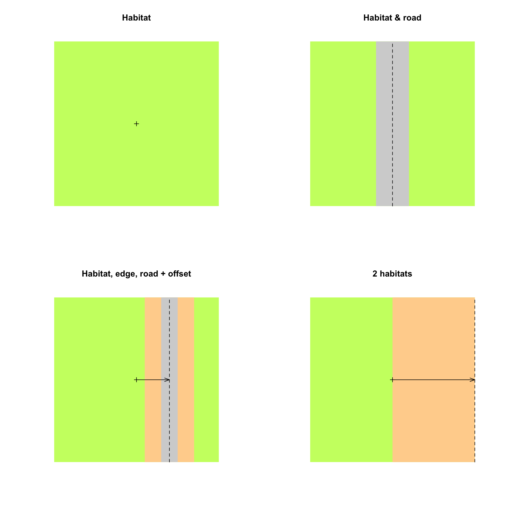
The bsims_populate function populates the landscape we created by the bsims_init function, which is the first argument we have to pass to bsims_populate. The function returns a population object (with class ‘bsims_population’). The most important argument that controls how many individuals will inhabit our landscape is density that defines the expected value of individuals per unit area (1 ha). By default, density = 1 (\(D=1\)) and we have 100 ha in the landscape (\(A=100\)) which translates into 100 individuals on average (\(E[N]=\lambda=AD\)). The actual number of individuals in the landscape might deviate from this expectation, because \(N\) is a random variable (\(N \sim f(\lambda)\)). The abund_fun argument controls this relationship between the expected (\(\lambda\)) and realized abundance (\(N\)). The default is a Poisson distribution:
Changing abund_fun can be useful to make abundance constant or allow under or overdispersion, e.g.:
summary(rpois(100, 100)) # Poisson variation
#> Min. 1st Qu. Median Mean 3rd Qu. Max.
#> 80.00 93.00 100.00 99.54 106.00 125.00
summary(MASS::rnegbin(100, 100, 0.8)) # NegBin variation
#> Min. 1st Qu. Median Mean 3rd Qu. Max.
#> 0.00 29.00 70.50 92.91 128.00 504.00
negbin <- function(lambda, ...) MASS::rnegbin(1, lambda, ...)
bsims_populate(l1, abund_fun = negbin, theta = 0.8)
#> bSims population
#> 1 km x 1 km
#> stratification: H
#> total abundance: 131
## constant abundance
bsims_populate(l1, abund_fun = function(lambda, ...) lambda)
#> bSims population
#> 1 km x 1 km
#> stratification: H
#> total abundance: 100Once we determine how many individuals will populate the landscape, we have control over the spatial arrangement of the nest location for each individual. The default is a homogeneous Poisson point process (complete spatial randomness). Deviations from this can be controlled by the xy_fun. This function takes distance as its only argument and returns a numeric value between 0 and 1. A function function(d) reurn(1) would be equivalent with the Poisson process, meaning that every new random location is accepted with probability 1 irrespective of the distance between the new location and the previously generated point locations in the landscape. When this function varies with distance, it leads to a non-homogeneous point process via this accept-reject algorithm. The other arguments (margin, maxit, fail) are passed to the underlying accepreject function to remove edge effects and handle high rejection rates.
In the next example, we fix the abundance to be constant (i.e. not a random variable, \(N=\lambda\)) and different spatial point processes:
D <- 0.5
f_abund <- function(lambda, ...) lambda
## systematic
f_syst <- function(d)
(1-exp(-d^2/1^2) + dlnorm(d, 2)/dlnorm(exp(2-1),2)) / 2
## clustered
f_clust <- function(d)
exp(-d^2/1^2) + 0.5*(1-exp(-d^2/4^2))
p1 <- bsims_populate(l1, density = D, abund_fun = f_abund)
p2 <- bsims_populate(l1, density = D, abund_fun = f_abund, xy_fun = f_syst)
p3 <- bsims_populate(l1, density = D, abund_fun = f_abund, xy_fun = f_clust)
distance <- seq(0,10,0.01)
op <- par(mfrow = c(3, 2))
plot(distance, rep(1, length(distance)), type="l", ylim = c(0, 1),
main = "random", ylab=expression(f(d)), col=2)
plot(p1)
plot(distance, f_syst(distance), type="l", ylim = c(0, 1),
main = "systematic", ylab=expression(f(d)), col=2)
plot(p2)
plot(distance, f_clust(distance), type="l", ylim = c(0, 1),
main = "clustered", ylab=expression(f(d)), col=2)
plot(p3)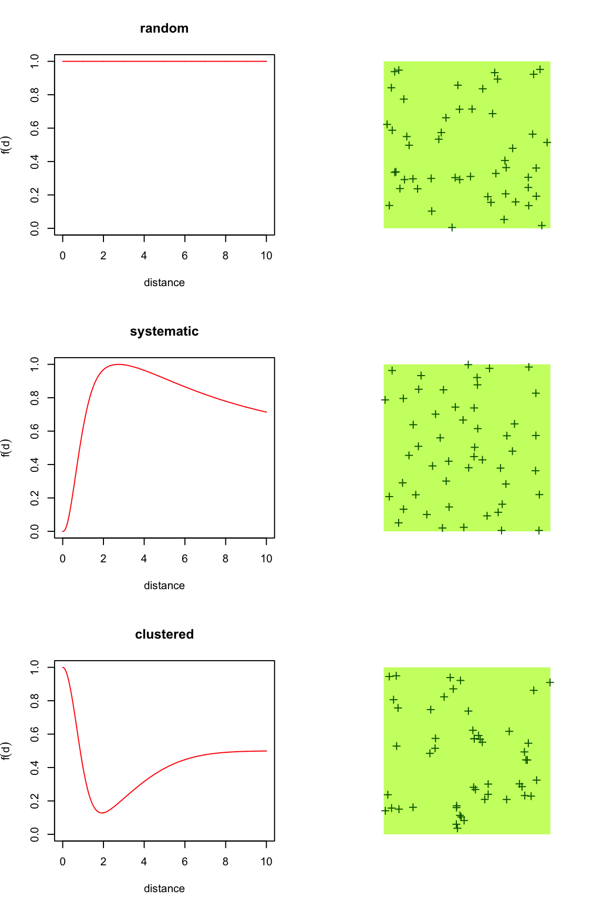
The get_nests function extracts the nest locations. get_abundance and get_density gives the total abundance (\(N\)) and density (\(D=N/A\), where \(A\) is extent^2) in the landscape, respectively.
If the landscape is stratified, that has no effect on density unless we specify different values through the density argument as a vector of length 3 referring to the HER strata:
D <- c(H = 2, E = 0.5, R = 0)
op <- par(mfrow = c(2, 2))
plot(bsims_populate(l1, density = D), main = "Habitat")
plot(bsims_populate(l2, density = D), main = "Habitat & road")
plot(bsims_populate(l3, density = D), main = "Habitat, edge, road + offset")
plot(bsims_populate(l4, density = D), main = "2 habitats")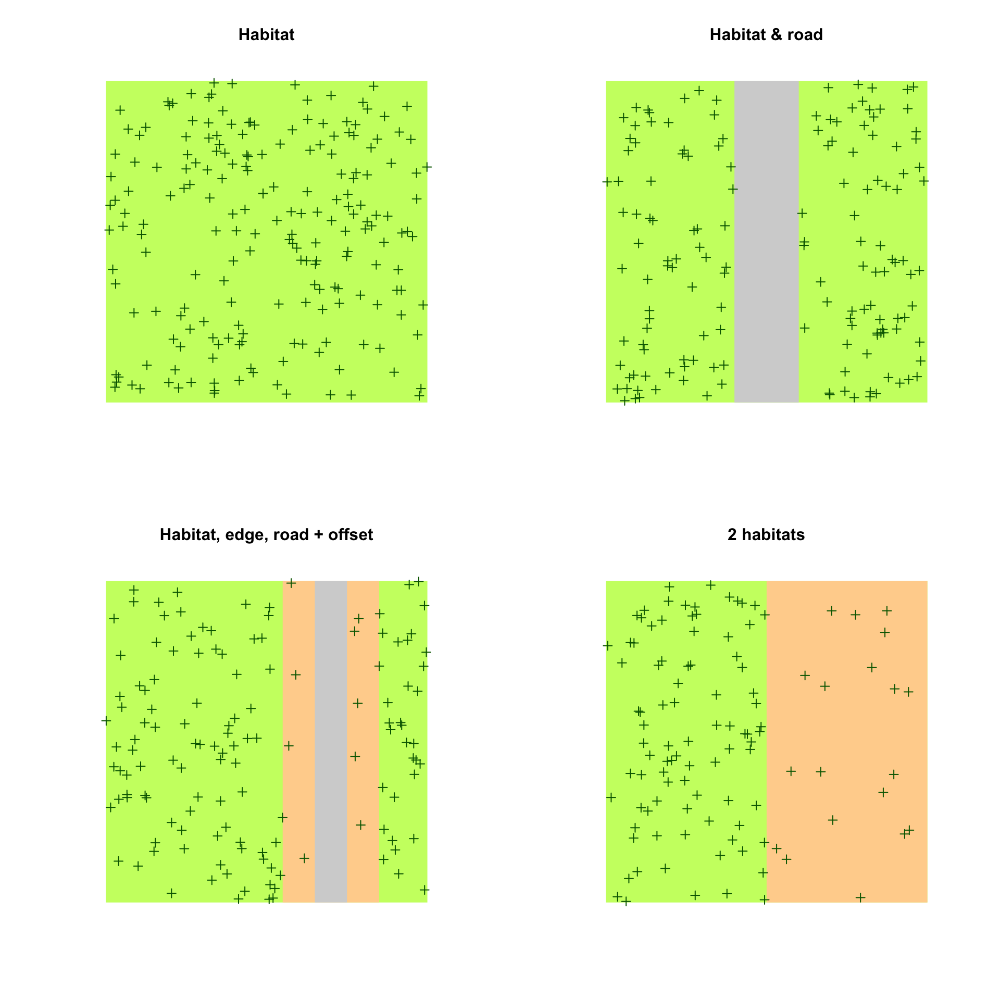
The bsims_animate function animates the population created by the bsims_populate function. bsims_animate returns an events object (with class ‘bsims_events’). The most important arguments are governing the duration of the simulation in minutes, the vocalization (vocal_rate), and the movement (move_rate) rates as average number of events per minute.
We can describe these behavioral events using survival modeling terminology. Event time (\(T\)) is a continuous random variable. In the simplest case, its probability density function is the Exponential distribution: \(f(t)=\phi e^{-t\phi}\). The corresponding cumulative distribution function is: \(F(t)=\int_{0}^{t} f(t)dt=1-e^{-t\phi}=p_t\), giving the probability that the event has occurred by duration \(t\). The parameter \(\phi\) is the rate of the Exponential distribution with mean \(1/\phi\) and variance \(1/\phi^2\).
In survival models, the complement of \(F(t)\) is called the survival function (\(S(t)=1-F(t)\), \(S(0)=1\)), which gives the probability that the event has not occurred by duration \(t\). The hazard function (\(\lambda(t)=f(t)/S(t)\)) defines the instantaneous rate of occurrence of the event (risk, the density of events at \(t\) divided by the probability of surviving). The cumulative hazard (cumulative risk) is the sum of the risks between duration 0 and \(t\) (\(\Lambda(t)=\int_{0}^{t} \lambda(t)dt\)).
The simplest survival distribution assumes constant risk over time (\(\lambda(t)=\phi\)), which corresponds to the Exponential distribution. The Exponential distribution also happens to describe the lengths of the inter-event times in a homogeneous Poisson process (events are independent, it is a ‘memory-less’ process).
bsims_animate uses independent Exponential distributions with rates vocal_rate and move_rate to simulate vocalization and movement events, respectively. The get_events function extracts the events as a data frame with columns describing the location (x, y) and time (t) of the events (v is 1 for vocalizations and 0 otherwise) for each individual (i gives the individual identifier that links individuals to the nest locations)
l <- bsims_init()
p <- bsims_populate(l, density = 0.5)
e1 <- bsims_animate(p, vocal_rate = 1)
head(get_events(e1))
#> x y t v i
#> 1 -3.1574571 -1.9481752 0.001580241 1 20
#> 2 3.2556064 -0.5015956 0.009923855 1 37
#> 3 -2.7010511 -0.2211221 0.010058172 1 23
#> 4 3.4310968 2.1861406 0.048788271 1 28
#> 5 0.9002583 -1.3580481 0.072173809 1 24
#> 6 3.6392110 0.4004323 0.094942885 1 42
plot(get_events(e1))
curve((1-exp(-1*x)) * get_abundance(e1), col=2, add=TRUE)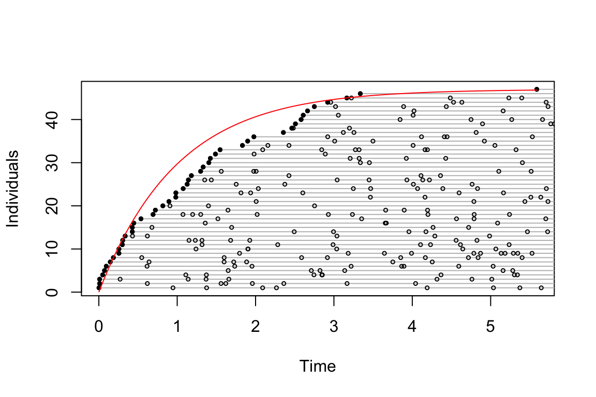
There are no movement related events when move_rate = 0, the individuals are always located at the nest, i.e. there is no within territory movement. If we increase the movement rate, we also have to increase the value of movement, that is the standard deviation of bivariate Normal kernels centered around each nest location. This kernel is used to simulate new locations for the movement events.
e2 <- bsims_animate(p, move_rate = 1, movement = 0.25)
op <- par(mfrow = c(1, 2))
plot(e1, main = "Closure")
plot(e2, main = "Movement")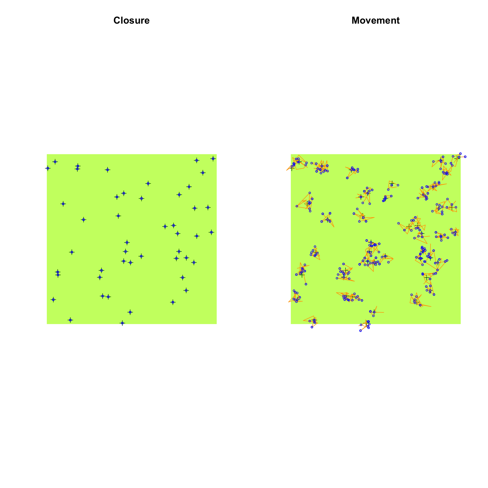
Individuals in the landscape might have different vocalization rates depending on, e.g., breeding status. Such heterogeneity can be added to the simulations as a finite mixture: vocal_rate and move_rate can be supplied as a vector, each element giving the rate for the groups. The mixture argument is then used to specify the mixture proportions.
e3 <- bsims_animate(p,
vocal_rate = c(25, 1), mixture = c(0.33, 0.67))
plot(get_events(e3))
curve((1-0.67*exp(-1*x)) * get_abundance(e3), col=2, add=TRUE)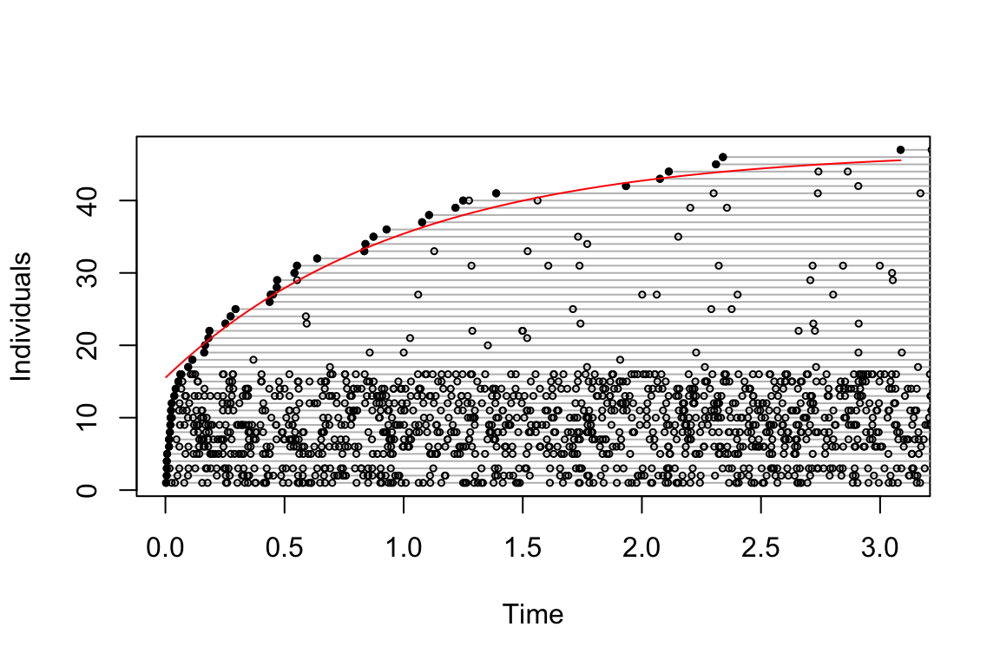
Vocal and movement rates (and corresponding kernel standard deviations) can be defined four different ways:
length(mixture): behavior based finite mixture groups,mixture = 1: mixtures correspond to HER strata,length(mixture): HER strata \(\times\) number of behavior based groups.Strata based groups are tracked by column s, behavior based groups are tracked as the column g in the output of get_nests.
Here is how different territory sizes can be achieved in a two-habitat landscape:
plot(bsims_animate(bsims_populate(l4, density = D),
move_rate = c(0.5, 1, 1), movement = c(0, 0.2, 0.2),
mixture = 1), main="Strata based mixtures")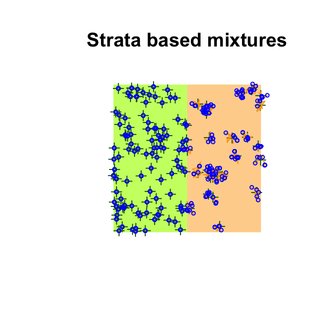
Stratum related behavior groups depend on the nest location. Sometimes it makes sense to restrict movement even further, i.e. individuals do not land in certain strata (but can cross a stratum if movement is large enough). For example, we can restrict movement into the road stratum (this requires density to be 0 in that stratum):
op <- par(mfrow = c(1, 2))
plot(bsims_animate(bsims_populate(l2, density = D),
move_rate = 1, movement = 0.3,
avoid = "none"), main="Movement not restricted")
plot(bsims_animate(bsims_populate(l2, density = D),
move_rate = 1, movement = 0.3,
avoid = "R"), main="Movement restricted")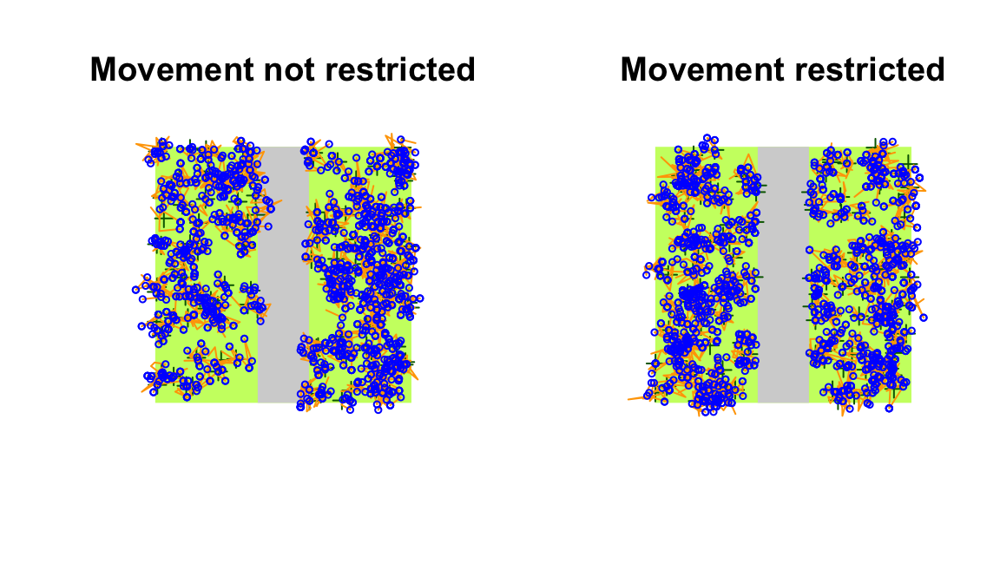
Another way to restrict the movement of individuals is to prevent the overlap based on a Voronoi tessellation around the nest locations. Note: we are using the update method here to update the allow_overlap argument of the previous call, and the plot method from the deldir package used for tessellation.
e4 <- update(e2, allow_overlap=FALSE)
op <- par(mfrow = c(1, 2))
plot(e2, main = "Overlap")
plot(e2$tess, add = TRUE,
wlines = "tess", wpoints = "none",
col = "grey", lty = 1)
plot(e4, main = "No overlap")
plot(e4$tess, add = TRUE,
wlines = "tess", wpoints = "none",
col = "grey", lty = 1)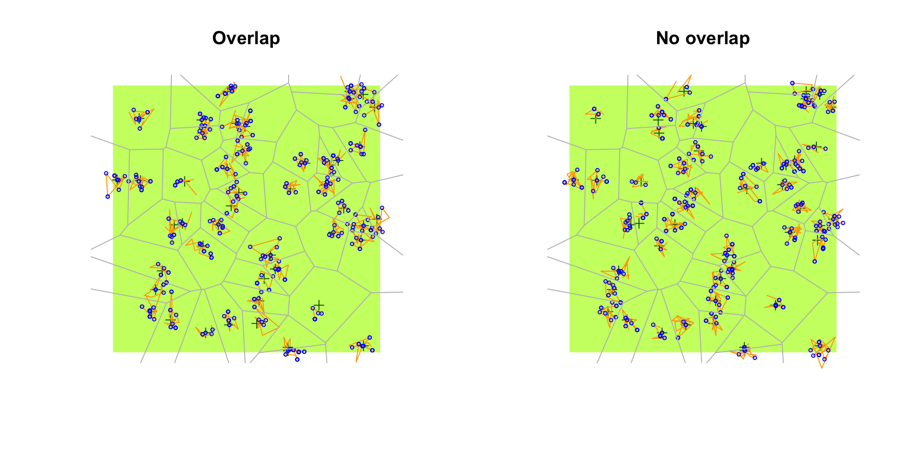
We haven’t mentioned the initial_location argument yet. This allows to override this whole layer and make all individuals fully available for the other layers applied on top. I.e. it is possible to study the observation process without any behavioral interference when initial_location = TRUE.
The bsims_detect function detects the events created by the bsims_animate function. bsims_detect returns a detections object (with class ‘bsims_detections’). The argument xy defines the location of the observer in the landscape. By default, it is in the middle, but can be moved anywhere within the bounds of the landscape.
tau is the parameter of the distance function dist_fun. The distance function (\(g(d)\)) describes the monotonic relationship of how the probability of detecting an individual decreases with distance (\(d\)). Detection probability at 0 distance is 1.
The most commonly used distance function is the Half-Normal. This is a one-parameter function (\(g(d) = e^{-(d/\tau)^2}\)) where probability initially remain high, reflecting an increased chance of detecting individuals closer to the observer (\(\tau^2\) is variance of the unfolded Normal distribution, \(\tau^2/2\) is the variance of the Half-Normal distribution). Run run_app("distfunH") to launch a shiny app to explore different distance functions, like Hazard rate.
The distance function must take distance d as its 1st argument and the parameter tau is its second argument (other arguments can be passed as well). E.g. the default is function(d, tau) exp(-(d/tau)^2), or the Hazard rate function can be written as function(d, tau, b=2) 1-exp(-(d/tau)^-b).
Individuals are detected via auditory and visual cues that are related to vocalization or movement events, respectively. The event_type argument determines what kinds of events can be detected, vocalization, movement, or both. Detection here refers to the Bernoulli process with probability \(g(d)\) given the actual linear distance between the individual at that time and the observer. The get_detections function extracts the events that are detected, the column d contains the distances (in 100 m units).
(d1 <- bsims_detect(e2, tau = 2))
#> bSims detections
#> 1 km x 1 km
#> stratification: H
#> total abundance: 47
#> duration: 10 min
#> detected: 19 heard
head(get_detections(d1))
#> x y t v d i j
#> 36 0.56654502 -2.1103945 0.3114306 1 2.1851175 41 41
#> 50 -4.03249134 1.4051888 0.4228829 1 4.2703094 10 10
#> 71 1.07678536 -1.8766084 0.6886996 1 2.1635910 46 46
#> 72 -1.04974751 -0.2095754 0.6892619 1 1.0704633 11 11
#> 82 0.90025832 -1.3580481 0.7595139 1 1.6293433 24 24
#> 86 -0.04955808 0.9531316 0.8354224 1 0.9544191 15 15
plot(d1)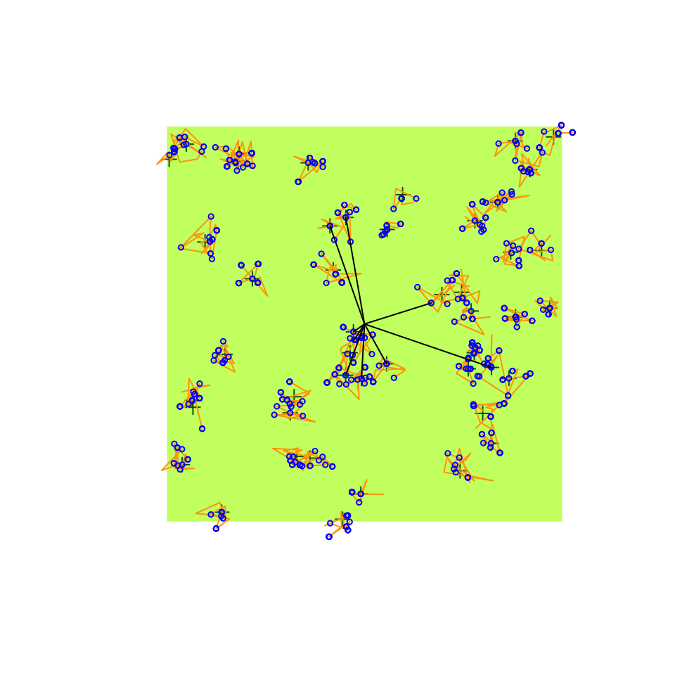
The tau argument can be a vector of length 3, referring to detection distances in the HER strata. When the landscape is stratified, and detection distances are different among the strata the bsims_detect function uses a segmented attenuation model along the linear distance between the bird and the observer. The run_app("distfunHER") shiny explores the segmented attenuation.
tau <- c(1, 2, 3, 2, 1)
d <- seq(0, 4, 0.01)
dist_fun <- function(d, tau) exp(-(d/tau)^2) # half normal
#dist_fun <- function(d, tau) exp(-d/tau) # exponential
#dist_fun <- function(d, tau) 1-exp(-(d/tau)^-2) # hazard rate
b <- c(0.5, 1, 1.5, 2) # boundaries
op <- par(mfrow=c(2, 1))
plot(d, dist_fun2(d, tau[1], dist_fun), type="n",
ylab="g(d)", xlab="d (100 m)", axes=FALSE,
main="Sound travels from left to right")
axis(1)
axis(2)
for (i in seq_len(length(b)+1)) {
x1 <- c(0, b, 4)[i]
x2 <- c(0, b, 4)[i+1]
polygon(c(0, b, 4)[c(i, i, i+1, i+1)], c(0, 1, 1, 0),
border=NA,
col=c("darkolivegreen1", "burlywood1", "lightgrey",
"burlywood1", "darkolivegreen1")[i])
}
lines(d, dist_fun2(d, tau[1], dist_fun))
lines(d, dist_fun2(d, tau[2], dist_fun))
lines(d, dist_fun2(d, tau[3], dist_fun))
lines(d, dist_fun2(d, tau, dist_fun, b), col=2, lwd=3)
plot(rev(d), dist_fun2(d, tau[1], dist_fun), type="n",
ylab="g(d)", xlab="d (100 m)", axes=FALSE,
main="Sound travels from right to left")
axis(1)
axis(2)
for (i in seq_len(length(b)+1)) {
x1 <- c(0, b, 4)[i]
x2 <- c(0, b, 4)[i+1]
polygon(c(0, b, 4)[c(i, i, i+1, i+1)], c(0, 1, 1, 0),
border=NA,
col=c("darkolivegreen1", "burlywood1", "lightgrey",
"burlywood1", "darkolivegreen1")[i])
}
lines(rev(d), dist_fun2(d, tau[1], dist_fun))
lines(rev(d), dist_fun2(d, tau[2], dist_fun))
lines(rev(d), dist_fun2(d, tau[3], dist_fun))
lines(rev(d), dist_fun2(d, tau, dist_fun, rev(4-b)), col=2, lwd=3)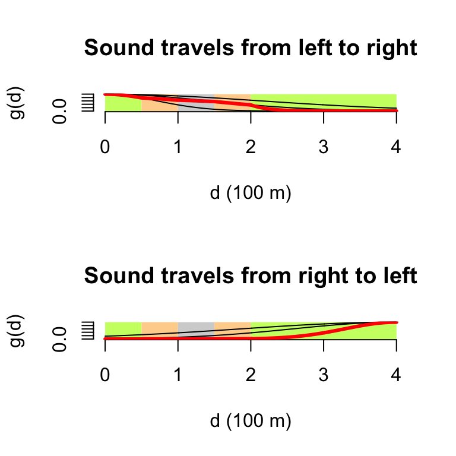
e5 <- bsims_animate(
bsims_populate(
bsims_init(road = 0.2, edge = 0.4), density = D),
move_rate = 1, movement = 0.2)
(d2 <- bsims_detect(e5, tau = c(1, 2, 3), event_type = "both"))
#> bSims detections
#> 1 km x 1 km
#> stratification: HER
#> total abundance: 192
#> duration: 10 min
#> detected: 48 seen/heard
head(get_detections(d2))
#> x y t v d i j
#> 25 0.7077971 -1.3834329 0.04585463 1 1.553983 148 148
#> 31 -1.6289983 -0.2969315 0.06989294 1 1.655839 89 89
#> 40 0.9776243 -0.8567035 0.09464514 0 1.299881 136 136
#> 90 1.2324568 0.3251513 0.23212265 1 1.274627 161 161
#> 110 -0.7048471 2.9448793 0.28508227 0 3.028056 91 91
#> 118 0.2906563 -0.3053235 0.30325080 0 0.421549 100 100
plot(d2)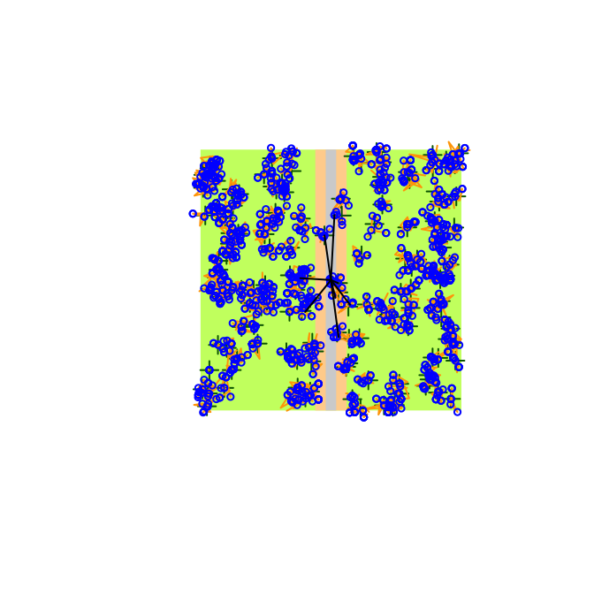
The tau argument can also be a vector of length 2 to provide parameters for vocalization (1st value) and movement (2nd value) related events. tau given as a 3 x 2 matrix combines strata (rows) and vocalization/movement (columns) related parameters.
The last layer of simulation is the bsims_transcribe function that transcribes the detections created by the bsims_detect function. bsims_transcribe returns a detections object (with class ‘bsims_transcript’). This layer refers to the process of the observer assigning detected individuals to time and distance categories. The tint argument is a vector containing the endpoints of the time intervals within the total duration in minutes. rint defines the distance bands in 100 m units, the maximum can be infinite referring to an unlimited distance count.
The error argument refers to distance estimation error. This does not impact the actual distance between the bird and the observer, but it can lead to misclassification of the distance interval where the individual is assigned. The argument is the log scale standard deviation for lognormally distributed random variable representing this error.
The condition argument defines which events will be transcribed: "event1" refers to the 1st event (detected or not), "det1" refers to the 1st detection, "alldet" means all detections (possibly counting the same individual multiple times). The event_type argument can be redefined here, too.
perception creates individual identifiers as perceived by the observer. The argument defines the perceived number of individuals relative to the actual number of individuals. It can be a non-negative number (<1 values lead to under counting, >1 values lead to over counting), or NULL (observer correctly identifies all individuals). The algorithm uses the event based locations in a hierarchical clustering. The dendrogram is cut at a height corresponding to specified perception level and group membership is used as individual identifier.
The bsims_transcribe eventually prepares a ‘removal’ table that counts the new individuals in each time/distance interval. This table is used in removal and distance sampling. The ‘visits’ table counts individuals by time and distance interval, but counting restarts in every time interval (i.e. not just the new individuals are counted). The plot method overlays the distance bands and a representation of the time intervals.
x <- bsims_transcribe(d1,
tint = c(2, 4, 6, 8, 10),
rint = c(0.5, 1, 1.5, Inf))
x
#> bSims transcript
#> 1 km x 1 km
#> stratification: H
#> total abundance: 47
#> duration: 10 min
#> detected: 19 heard
#> 1st event detected by breaks:
#> [0, 2, 4, 6, 8, 10 min]
#> [0, 50, 100, 150, Inf m]
plot(x)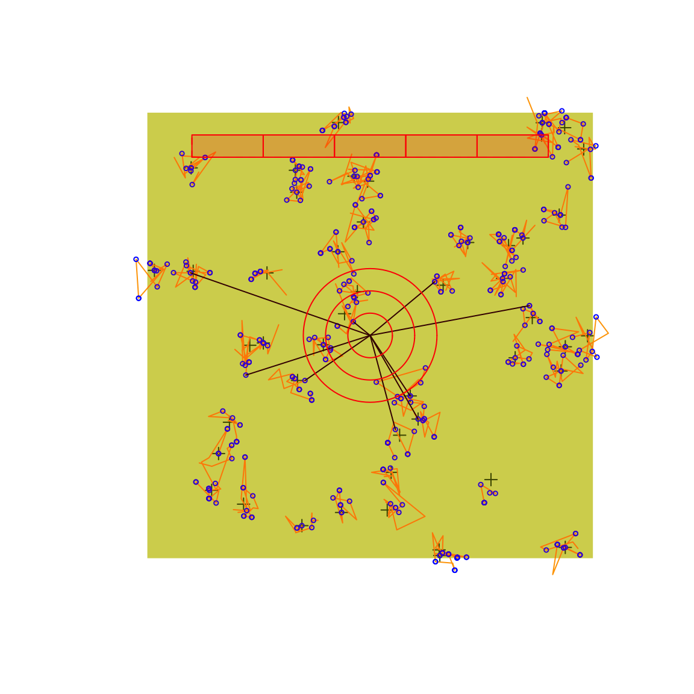
We can test the validity of the simulations when all of the assumptions are met (that is the default) in the homogeneous habitat case. We set singing rate (phi), detection distance (tau), and density (Den) for the simulations. Density is in this case unrealistically high, because we are not using replication only a single landscape. This will help with the estimation.
phi <- 0.5 # singing rate
tau <- 2 # detection distance
Den <- 10 # density
set.seed(1)
l <- bsims_init()
a <- bsims_populate(l, density=Den)
b <- bsims_animate(a, vocal_rate=phi)
o <- bsims_detect(b, tau=tau)
tint <- c(1, 2, 3, 4, 5)
rint <- c(0.5, 1, 1.5, 2) # truncated at 200 m
(x <- bsims_transcribe(o, tint=tint, rint=rint))
#> bSims transcript
#> 1 km x 1 km
#> stratification: H
#> total abundance: 1014
#> duration: 10 min
#> detected: 259 heard
#> 1st event detected by breaks:
#> [0, 1, 2, 3, 4, 5 min]
#> [0, 50, 100, 150, 200 m]
(y <- get_table(x, "removal")) # binned new individuals
#> 0-1min 1-2min 2-3min 3-4min 4-5min
#> 0-50m 1 3 1 2 0
#> 50-100m 7 3 5 1 1
#> 100-150m 12 2 2 1 2
#> 150-200m 13 8 2 1 1
colSums(y)
#> 0-1min 1-2min 2-3min 3-4min 4-5min
#> 33 16 10 5 4
rowSums(y)
#> 0-50m 50-100m 100-150m 150-200m
#> 7 17 19 25
plot(x)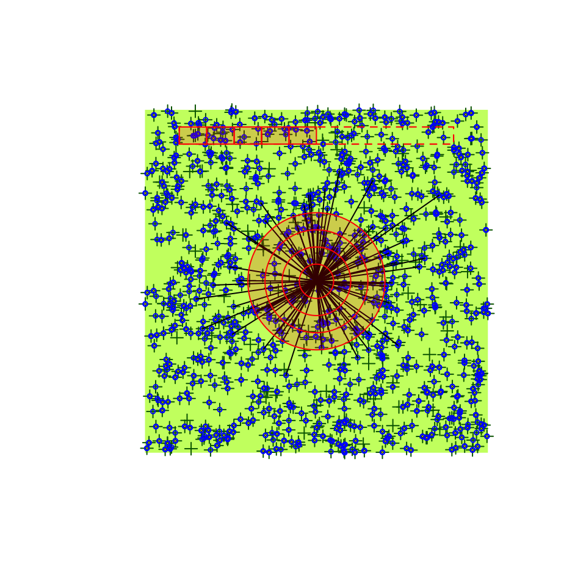
We use the detect package to fit removal model and distance sampling model to the simulated output. This is handily implemented in the estimate method for the transcription objects. First, we estimate singing rate, effective detection distance, and density based on truncated distance counts:
library(detect)
#> Loading required package: Formula
#> Loading required package: stats4
#> Loading required package: pbapply
#> detect 0.4-2 2018-08-29
cbind(true = c(phi=phi, tau=tau, D=Den),
estimate = estimate(x))
#> true estimate
#> phi 0.5 0.5768794
#> tau 2.0 2.2733052
#> D 10.0 8.2330714Next, we estimate singing rate, effective detection distance, and density based on unlimited distance counts:
rint <- c(0.5, 1, 1.5, 2, Inf) # unlimited
(x <- bsims_transcribe(o, tint=tint, rint=rint))
#> bSims transcript
#> 1 km x 1 km
#> stratification: H
#> total abundance: 1014
#> duration: 10 min
#> detected: 259 heard
#> 1st event detected by breaks:
#> [0, 1, 2, 3, 4, 5 min]
#> [0, 50, 100, 150, 200, Inf m]
(y <- get_table(x, "removal")) # binned new individuals
#> 0-1min 1-2min 2-3min 3-4min 4-5min
#> 0-50m 1 3 1 2 0
#> 50-100m 7 3 5 1 1
#> 100-150m 12 2 2 1 2
#> 150-200m 13 8 2 1 1
#> 200+m 15 9 6 6 2
colSums(y)
#> 0-1min 1-2min 2-3min 3-4min 4-5min
#> 48 25 16 11 6
rowSums(y)
#> 0-50m 50-100m 100-150m 150-200m 200+m
#> 7 17 19 25 38
cbind(true = c(phi=phi, tau=tau, D=Den),
estimate = estimate(x))
#> true estimate
#> phi 0.5 0.5128359
#> tau 2.0 1.9928785
#> D 10.0 9.2041636Deviations from the assumptions and bias in density estimation can be done by systematically evaluating the simulations settings, which we describe in the next section.
We recommend exploring the simulation settings interactively in the shiny apps using run_app("bsimsH") app for the homogeneous habitat case and the run_app("bsimsHER") app for the stratified habitat case. The apps represent the simulation layers as tabs, the last tab presenting the settings that can be copied onto the clipboard and pasted into the R session or code. In simple situations, comparing results from a few different settings might be enough.
Let us consider the following simple comparison: we want to see how much of an effect does roads have when the only effect is that the road stratum is unsuitable. Otherwise there are no behavioral or detectability effects of the road.
tint <- c(2, 4, 6, 8, 10)
rint <- c(0.5, 1, 1.5, 2, Inf) # unlimited
## no road
b1 <- bsims_all(
road = 0,
density = c(1, 1, 0),
tint = tint,
rint = rint)
## road
b2 <- bsims_all(
road = 0.5,
density = c(1, 1, 0),
tint = tint,
rint = rint)
b1
#> bSims wrapper object with settings:
#> road : 0
#> density: 1, 1, 0
#> tint : 2, 4, 6, 8, 10
#> rint : 0.5, 1, 1.5, 2, Inf
b2
#> bSims wrapper object with settings:
#> road : 0.5
#> density: 1, 1, 0
#> tint : 2, 4, 6, 8, 10
#> rint : 0.5, 1, 1.5, 2, InfThe bsims_all function accepts all the arguments we discussed before for the simulation layers. Unspecified arguments will be taken to be the default value. However, bsims_all does not evaluate these arguments, but it creates a closure with the settings. Realizations can be drawn as:
b1$new()
#> bSims transcript
#> 1 km x 1 km
#> stratification: H
#> total abundance: 75
#> duration: 10 min
#> detected: 12 heard
#> 1st event detected by breaks:
#> [0, 2, 4, 6, 8, 10 min]
#> [0, 50, 100, 150, 200, Inf m]
b2$new()
#> bSims transcript
#> 1 km x 1 km
#> stratification: HR
#> total abundance: 95
#> duration: 10 min
#> detected: 4 heard
#> 1st event detected by breaks:
#> [0, 2, 4, 6, 8, 10 min]
#> [0, 50, 100, 150, 200, Inf m]Run multiple realizations is done as:
The replicate function takes an argument for the number of replicates (B) and returns a list of transcript objects with \(B\) elements. The cl argument can be used to parallelize the work, it can be a numeric value on Unix/Linux/OSX, or a cluster object on any OS. The recover = TRUE argument allows to run simulations with error catching.
Simulated objects returned by bsims_all will contain different realizations and all the conditionally independent layers. Use a customized layered approach if former layers are meant to be kept identical across runs.
In more complex situations the shiny apps will help identifying corner cases that are used to define a gradient of settings for single or multiple simulation options. Let us consider the following scenario: we would like to evaluate how the estimates are changing with increasing road width. We will use the expand_list function which creates a list from all combinations of the supplied inputs. Note that we need to wrap vectors inside list() to avoid interpreting those as values to iterate over.
s <- expand_list(
road = c(0, 0.5, 1),
density = list(c(1, 1, 0)),
tint = list(tint),
rint = list(rint))
str(s)
#> List of 3
#> $ :List of 4
#> ..$ road : num 0
#> ..$ density: num [1:3] 1 1 0
#> ..$ tint : num [1:5] 2 4 6 8 10
#> ..$ rint : num [1:5] 0.5 1 1.5 2 Inf
#> $ :List of 4
#> ..$ road : num 0.5
#> ..$ density: num [1:3] 1 1 0
#> ..$ tint : num [1:5] 2 4 6 8 10
#> ..$ rint : num [1:5] 0.5 1 1.5 2 Inf
#> $ :List of 4
#> ..$ road : num 1
#> ..$ density: num [1:3] 1 1 0
#> ..$ tint : num [1:5] 2 4 6 8 10
#> ..$ rint : num [1:5] 0.5 1 1.5 2 InfWe now can use this list of settings to run simulations for each. The following illustrates the use of multiple cores:
b <- lapply(s, bsims_all)
nc <- 4 # number of cores to use
library(parallel)
cl <- makeCluster(nc)
bb <- lapply(b, function(z) z$replicate(B, cl=cl))
stopCluster(cl)In some cases, we want to evaluate crossed effects of multiple settings. For example, road width and spatial pattern (random vs. clustered):
s <- expand_list(
road = c(0, 0.5),
xy_fun = list(
NULL,
function(d) exp(-d^2/1^2) + 0.5*(1-exp(-d^2/4^2))),
density = list(c(1, 1, 0)),
tint = list(tint),
rint = list(rint))
str(s)
#> List of 4
#> $ :List of 5
#> ..$ road : num 0
#> ..$ xy_fun : NULL
#> ..$ density: num [1:3] 1 1 0
#> ..$ tint : num [1:5] 2 4 6 8 10
#> ..$ rint : num [1:5] 0.5 1 1.5 2 Inf
#> $ :List of 5
#> ..$ road : num 0.5
#> ..$ xy_fun : NULL
#> ..$ density: num [1:3] 1 1 0
#> ..$ tint : num [1:5] 2 4 6 8 10
#> ..$ rint : num [1:5] 0.5 1 1.5 2 Inf
#> $ :List of 5
#> ..$ road : num 0
#> ..$ xy_fun :function (d)
#> .. ..- attr(*, "srcref")= 'srcref' int [1:8] 5 5 5 53 5 53 5 5
#> .. .. ..- attr(*, "srcfile")=Classes 'srcfilecopy', 'srcfile' <environment: 0x7fd50dde1af8>
#> ..$ density: num [1:3] 1 1 0
#> ..$ tint : num [1:5] 2 4 6 8 10
#> ..$ rint : num [1:5] 0.5 1 1.5 2 Inf
#> $ :List of 5
#> ..$ road : num 0.5
#> ..$ xy_fun :function (d)
#> .. ..- attr(*, "srcref")= 'srcref' int [1:8] 5 5 5 53 5 53 5 5
#> .. .. ..- attr(*, "srcfile")=Classes 'srcfilecopy', 'srcfile' <environment: 0x7fd50dde1af8>
#> ..$ density: num [1:3] 1 1 0
#> ..$ tint : num [1:5] 2 4 6 8 10
#> ..$ rint : num [1:5] 0.5 1 1.5 2 InfThe package is not equipped with all the possible ways to estimate the model parameters. It only has rudimentary removal modeling and distance sampling functionality implemented for the interactive visualization and testing purposes. Estimating parameters for more complex situations ( i.e. finite mixture removal models, or via Hazard rate distance functions) or estimating abundance via multiple-visit N-mixture models etc. is outside of the scope of the package and it is the responsibility of the user to make sure those work as expected. Although there is an ever increasing set of scripts coversing some of these aspects in the /inst/tmp folder of the package and in the QPAD book.
Other intentional limitation of the package is the lack of reverse interactions between the layers. For example the presence of an observer could influence behavior of the birds close to the observer. Such features can be implemented as methods extending the current functionality.
Another limitation is that this implementation considers single species. Observers rarely collect data on single species but rather count multiple species as part of the same survey. The commonness of the species, observer ability, etc. can influence the observation process when the whole community is considered. Such scenarios are also not considered at present. Although the same landscape can be reused for multiple species, and building up the simulation that way.
The package considers simulations as independent in space and time. When larger landscapes need to be simulated, there might be several options: (1) simulate a larger extent and put multiple independent observers into the landscape; or (2) simulate independent landscapes in isolation. The latter approach can also address spatial and temporal heterogeneity in density, behaviour, etc. E.g. if singing rate is changing as a function of time of day, one can define the vocal_rate values as a function of time, and simulate independent animation layers. When the density varies in space, one can simulate independent population layers.
These limitations can be addressed as additional methods and modules extending the capabilities of the package, or as added functionality to the core layer functions in future releases.